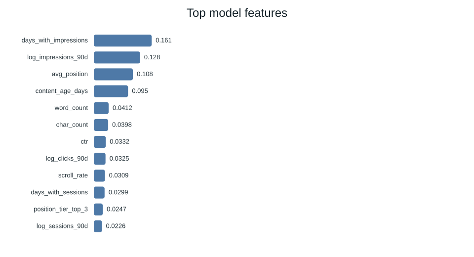
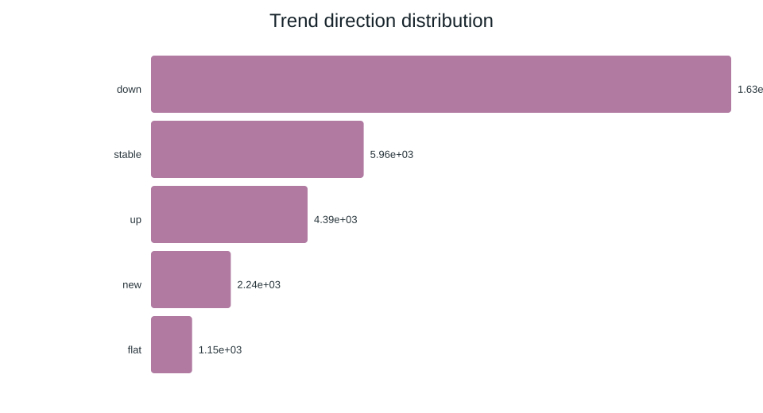

Abstract
FlyRank editors face a common content problem: a backlog of pages still receives visible demand but is quietly slipping in performance, and the team needs a way to identify which ones deserve a refresh review before the traffic drop becomes costly. We modeled this as a client-holdout page-ranking problem on an anonymized dataset of 30,000 pages, using page-level behavior and freshness signals to predict which pages are most likely to be declining. The transparent baseline rule was outperformed by a random forest model, which achieved a Precision@50 of 0.680 versus 0.240 for the rule baseline, a roughly 2.8x lift at the top of the queue. The strongest predictors were engagement and visibility signals such as days with impressions, impression volume, average position, and content age, showing that the model is surfacing pages with real demand that are beginning to fade rather than just low-traffic pages. The result is an editorial decision-support tool that helps FlyRank triage the highest-value refresh opportunities without replacing human judgment.
1. Problem and why it matters
For FlyRank, the practical content problem is not finding pages that are already obviously broken. It is finding the pages that still attract visibility, still carry editorial value, and yet are quietly slipping in performance. A small decline on a high-volume page can turn into a real missed opportunity if the page sits in the backlog without a refresh review for weeks.
The decision-support question is straightforward: when should a human reviewer inspect a page and consider a refresh? A good ranking model should surface the pages with the highest expected upside and the clearest evidence of deterioration while avoiding an endless queue of low-potential content. That is exactly where a score-based queue fits: it narrows the review set, shows the strongest reasons behind each recommendation, and keeps the final choice in the editor’s hands.
2. Data and safety
The paper uses the bundled anonymized FlyRank starter dataset, which contains 79M rows and 44 features . The label for the task is is_declining_label, defined as whether the page trend direction is downward. This target is derived from page behavior rather than editorial judgment, so the signal is measurable and reproducible.
To stay safe and public-appropriate, we excluded client-identifying information, page titles, URLs, domains, and any raw keyword fields from the modeling set. We also kept the label logic consistent with the project rules: trend direction and trend percentage are used to define the target, not to leak signal into the model itself. The model is therefore a decision-support layer on public-safe behavioral features, not a system that infers hidden client identity.
3. Methodology
We compared a transparent hand-written rule baseline with three supervised models: logistic regression, decision tree, and random forest. Every model was evaluated on the same client-holdout split, which avoids a common leakage trap where a client’s pages appear in both train and test sets. That design matters because the task is operational: the queue must help real editorial review, not only memorize patterns from the same clients.
The model used page-level traffic and engagement features like impression volume, click-through rate, position, content age, days with activity, and scroll behavior. The rule baseline acted as the fair comparison: it was not a hidden benchmark, but a simple operational heuristic that could be understood and explained to editors.
| Model | ROC AUC | Avg precision | Precision@50 | Recall | F1 |
|---|---|---|---|---|---|
| Decision tree | 0.742 | 0.575 | 0.620 | 0.716 | 0.634 |
| Logistic regression | 0.700 | 0.522 | 0.400 | 0.567 | 0.566 |
| Random forest | 0.747 | 0.610 | 0.680 | 0.741 | 0.638 |
| Baseline rules | 0.627 | 0.468 | 0.240 | - | - |
4. Results
The random forest model was selected as the best-performing option on precision-at-50, the metric that matters most when the queue is limited and reviewer time is constrained. With a 54.2% declining base rate, the model improved Precision@50 from 0.240 to 0.680. In practical terms, the top of the ranked queue contains more than twice as many genuinely declining pages than the equitable rule baseline, which makes the queue much more reviewable for a real editorial flow.




5. Interpretation
The strongest predictors were not exotic NLP features or client metadata — they were survivable, interpretable operational signals: days with impressions, log impressions in the past 90 days, average position, content age, and word count. That pattern is useful because it shows that the model is looking for pages with visible demand and declining quality signals rather than random low-volume noise.
In plain language, the model is saying: the highest-value refresh candidates are pages that still have meaningful visibility, but whose traffic pattern and prominence have begun to soften. For an editor, this is exactly the decision-support signal they need: a page that is still important enough to repair, but currently underperforming relative to its own baseline.
6. Recommendations
Based on this work, a sane production policy is:
- Review the top-ranked pages first, starting with the highest-confidence queue entries.
- Prioritize pages that are both high-volume and in an evident downward trend, especially where low CTR or reduced engagement suggests a diminishing return.
- Use the model as a triage layer, not a single verdict: it should surface review candidates, not replace subject-matter judgment.
- Capture a human review loop so the final refresh decision is checked against actual page quality and current editorial goals.
That makes the model useful in daily operations without over-claiming causal certainty. It is a review aid for editorial prioritization and a disciplined way to escalate the best refresh opportunities before they become expensive misses.
7. Acknowledgments and data credit
This work was built on the FlyRank ML Internship dataset. The model and the findings are intended for editorial research and decision-support work, not for automatic action without a human review step.